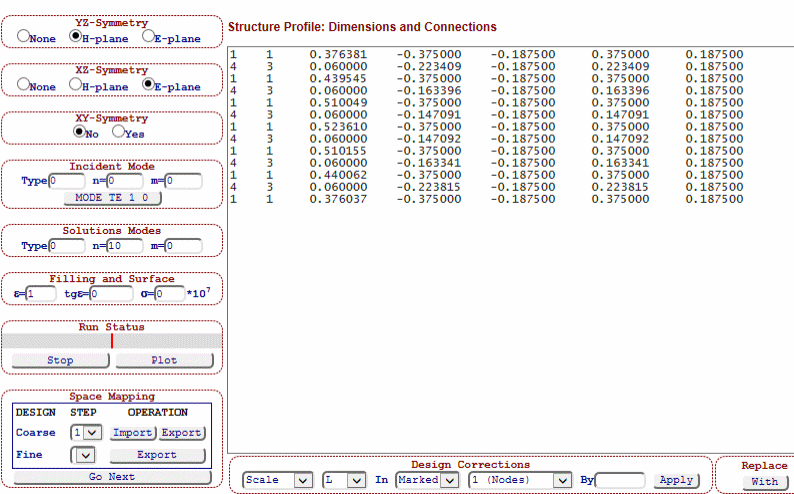
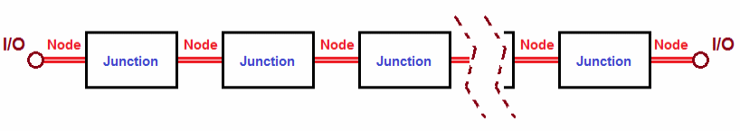
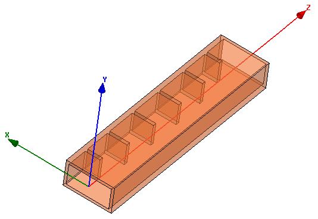
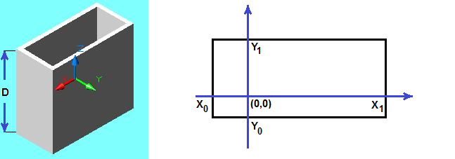
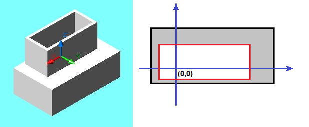
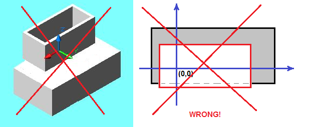
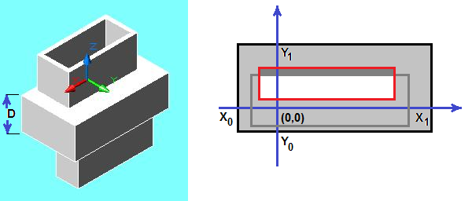
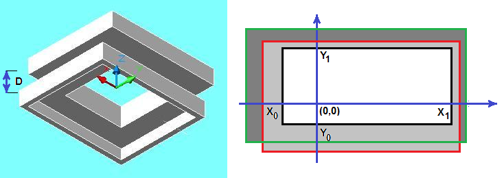
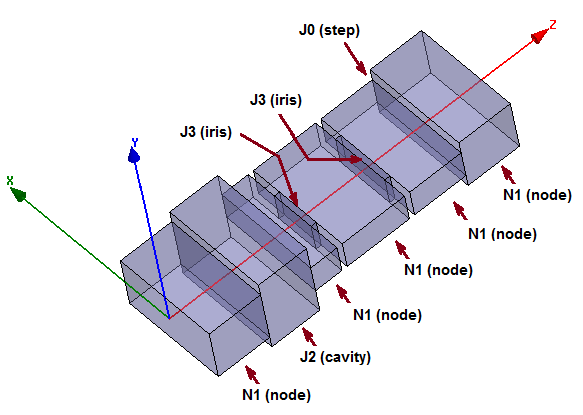
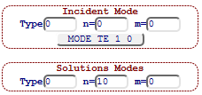

The Design Editor is realized on Editor Page (see Figure 1) with local URL “editor.htm”. It is a dynamic HTML webpage with multiple controls, forms and drop-down menus.

Figure 1: Design Editor screenshot
All those control elements are associated with the design concept and its EM model (elements, modal settings, filling) and geometric dimensions (length, width, height and position of each element). There are the following controls:
Structure Profile window contains a plain text editor with the design profile, which represents the design concept (EM model) in terms of junctions, their sequential connections and dimensions measured in the units set in Setup Page. See more information here below, tutorials and design examples.
YZ Symmetry sets a type of vertical symmetry (none, H-plane, E-plane) applicable to whole structure
XZ Symmetry sets a type of horizontal symmetry (none, H-plane, E-plane) applicable to whole structure
XY Symmetry sets the longitudinal symmetry (if structure remains same if flipping input and output) with button “Yes” turned on. Otherwise, in case of no symmetry the button “No” is to be on.
Incident Mode sets the incidental waveguide mode with three indexes (see more information below).
Solutions Modes sets the basic set of waveguide modes counted in the solution (see more information below).
Filling and Surface sets the internal filling (dielectric constant and loss tangent) and the conductivity of surface.
Run Status is a control, which contains a process bar showing a completion state of simulations (simulation, performance optimization, space mapping optimization)
Space Mapping controls perform iterations of aggressive space mapping (ASM) algorithm. It is an advanced feature with more information in tutorials.
Design Corrections is a set of controls performing different ways of scaling and correction of structure dimensions. It is an advanced feature with more information in tutorials.
Replace control is used to replace a textual content selected in the Structure Profile window with the content entered by user in the text bar. It is an advanced feature with more information in tutorials.
The Design Editor is also equipped with three drop-down menus from the Main Menu black bar (located on the top of the WR-Connect pages).
Edit menu contains several drop-dawn options, which are not functional yet. It will be populated soon (see updates info on the home page)
Design menu also contains several drop-dawn option leading to appropriate design pages, which create initial design concept template. Only iris filter design page is currently available. See updates info about these options on the home page.
Run menu contain several options, which execute the following tasks:
Run Simulation executes simulation of the structure entered in the Structure Profile window over the frequency sweep set in Initial Setup.
Run Synthesis executes synthesis algorithm, which modifies the structure entered in the Structure Profile window in accordance with the filter prototype set in the Initial Setup page.
Run Optimization executes performance optimization, which modifies the structure entered in the Structure Profile window approaching the performance goals set in Initial Setup page as optimization parameters.
Run ASM Step executes aggressive space mapping (ASM) optimization, which modifies the structure entered in the Structure Profile window approaching it to external s-parameters in accordance with the goals set in Initial Setup page as optimization parameters.
WR-Connect utilizes a simple and unique way of representing a design concept in terms of text lines. This approach differs from common design tools, which represent a EM structure as a network of symbols (AWR, Mician, FEST-3D) or 3D drawings (HFSS, CST). WR-Connect EM structure representation is realized as a plain text file, which is closer to old-fashioned software like Touchstone, but much simpler and more efficient. Despite its visual inconvenience, this method has multiple advantages in design operations (easy connecting, removing, inserting and correcting the single elements and parts of structure) as simple text edition operations (pasting, cutting, copying, replacing).
WR-Connect is applicable to EM structures composed from three types of junction (waveguide component performing incident mode scattering). Each of those junctions represent a solution of EM boundary problem of waveguide scattering realized in variational mode-matching numerical approximation. The solutions express 2x2 GSM versus frequency (frequency domain) characteristics of the following types of connections between two waveguides:
Step Junction (index 0) is an uniaxial junction of two waveguides.
Cavity Junction (index 2) is an uniaxial junction of three waveguides when the middle waveguide is greater in cross-section.
Iris Junction (index 3) is an uniaxial junction of three waveguides when the middle waveguide is smaller in cross-section.
All three types are defined below in more details. The EM solution is based on the variational mode-matching solution (see [1] for details) counting a single incident (accessible) mode and full set of localized modes (set in Solution Modes area). Each of the junctions have 0-length interface. In the other words, the EM solution for the s-parameters does not include the electrical phase of the waveguides connected to the junction from the both ends. For example, a step junction (index 0) of two waveguides includes just the face of their connection and it does not include the lengths of the waveguides (i.e. the junction has zero length). The whole EM structure is composed from those types of junctions, which put sequentially in a cascade and connected by straight waveguide sections. Those waveguides, which are used to connect junctions are called “nodes” here. Only one type of node is used in this version of WR-Connect:
Node (index 1) is a straight waveguide section with only incident mode propagation
Thus, the structure can be designed from those four elements described above if put in cascade (see Figure 2) according to the connection rules.

Figure 2: EM structure representation as sequential connection of junctions put between nodes
Connection rules are:
Each junction/connector (indexes 0, 2, 3) is put between nodes (index 1)
Each node (index 1) is put between junctions (indexes 0, 2, 3) except interface (input/output) nodes.
The structure starts from a node (index 1) and ends with a node (index 1)
Each of the elements in the cascade (see Figure 2) is represented as a single text line in the Structure Profile window, which is written in a certain order and contain records about element type (index), length, XY coordinates of left bottom and right top points of the cross-section rectangle.
The structure dimensions is referenced to a rectangular XYZ coordinate system (see Figure 3) with the centre located at the beginning of the structure (say input port) with the Z axis directed in the direction of the waveguide channel forward to the opposite end (say output port) and parallel to the walls of waveguides. The X and Y axis's lays in the plane of the input face oriented in parallel to the top/bottom and side walls edges respectively.

Figure 3: Reference coordinate system and structure orientation
The centre of the coordinate centre is generally a matter of user’s preference. In case of vertical or/and horizontal symmetry, the coordinate centre must lay on the appropriate symmetry planes. In other words, if our structure is symmetric relatively to the central vertical plane, the Y-axis must lay on the symmetry plane. If, for example, the structure is symmetrical in respect to the central horizontal plane, the X-axis must lay on it.
Each constituent element of the waveguide structure is entered as a single text line record into the Structure Profile text content. The element record contains seven parameters (two keys and five dimensions). The dimensions of the element are defined as shown on Figure 4.
Table 1: Node keys and parameters record order
|
i |
Index |
D |
X0 |
Y0 |
X1 |
Y1 |
0.000 |
The element parameters record contains the following data:
i is an integer variable mark, which points to i-th dimension variable (marked in black bold font in Table 1) counted from D. For example if i=3, dimension Y0 is marked. The marked will be updated during automatic design operations (synthesis, optimization, scaling and automatic corrections). If the structure is defined as symmetric, the mirror dimension will be also updated.
Index is a natural number, the element type identification index (its ID), which specified the EM solution associated with the element (see section 3B above).
D is a decimal number, the length of the waveguide section (iris thickness, length of node or cavity). D has no meaning for a step junction, which does not have a length (zero).
X0 is a decimal number, the x-coordinate of the left wall of the waveguide cross-section rectangle
Y0 is a decimal number, the y-coordinate of the bottom wall of the waveguide cross-section rectangle
X1 is a decimal number, the x-coordinate of the right wall of the waveguide cross-section rectangle
Y1 is a decimal number, the y-coordinate of the top wall of the waveguide cross-section rectangle
0.000 (last decimal number in line) does not have a definition and it is not utilized anywhere in computations. It is an optional mark, which distinguishes the junctions (connectors) from the nodes in order to visualize a compliance to the connection rules (Section 3C). WR-Connect does not require to put zero at the end of each junction specs, but it automatically adds it when the structure is updated.
The Node is a section of rectangular waveguide, which is defined with the length D and cross-section rectangle given by the coordinates of the left bottom corner (X0, Y0) and right top corner (X1, Y1) if looking at the input aperture (see Figure 4).

Figure 4: A waveguide section (Node) with defined dimensions
The Node element is represented as a single text line in the Structure Profile text content. The text line contains a record of seven parameters and keys in the order shown below in Table 2 below and definitions in section 3E above.
Table 2: Node keys and parameters record order
|
i |
1 |
D |
X0 |
Y0 |
X1 |
Y1 |
The Step Junction (index 0) is a direct (inline uniaxial) connection of two rectangular waveguides (see Figure 5). The both waveguides are defined as Node (index 1). The Step Junction is specified only with index key (index=0) and all other parameters are ignored by the computational algorithm and set to zeros if been updated (see Table 3).
Table 3: Node keys and parameters record order
|
0 |
0 |
0.000 |
0.000 |
0.000 |
0.000 |
0.000 |
0.000 |
Although the Step Junction record does not contain any information it must be presented in the Structure Profile if two waveguide nodes directly connected to each other.

Figure 5: Step junction of two rectangular waveguides. One of the waveguide cross-sections is within or coincide with the other one, but does not crosses its boundaries.
The Step Junction connection is valid if the cross-section of one of the waveguides is within the cross-section of the other waveguide as shown on Figure 5. Some of the boundaries of the rectangles or even all of them, however, may coincide but not intersect (see Figure 6 for example).

Figure 6 : An example of wrong connection when the cross-section area of one waveguide intersects with the cross-section area of the other one
The Cavity Junction is formed as an uniaxial connection of three waveguides (two Nodes (index 1) and Cavity (index 2) between them) as shown on Figure 5 below. Though the junction is formed by two Step Junctions (section 3G) connected to each other with tapered ends, the EM solution differs and it is more accurate, because it counts all “localized” [1] waveguide modes (set as Solution Modes in the Design Editor). Therefore, in case of same waveguide structures representable in different ways (steps, irises, cavities), it is recommended to represent the structure by Cavity Junctions.

Figure 7: A Cavity Junction formed by a waveguide of greater cross-section.
The rules for the positioning of the waveguides relatively to each other are same as in case of the Step Junction from each side. In other words, each of the input Nodes must have a cross-section included into the cross-section area of the Cavity (the nodes boundaries may coincide but do not intersect with boundaries of the cavity). The Cavity Junction record order is shown below:
Table 4: Cavity Junction keys and parameters record order
|
i |
2 |
D |
X0 |
Y0 |
X1 |
Y1 |
0.000 |
The Iris Junction is formed as an uniaxial connection of three waveguides (two Nodes (index 1) and Iris (index 3) between them) as shown on Figure 6 below. In vice versa, the cross section area of the Iris must be within the cross-section area of each connecting Node (the boundaries of the Iris window may coincide but do not intersect with boundaries of the Nodes).

Figure 8: Iris Junction formed by a waveguide of smaller cross-section.
The Iris Junction record order is shown below:
Table 4: Cavity Junction keys and parameters record order
|
i |
3 |
D |
X0 |
Y0 |
X1 |
Y1 |
0.000 |
As it is already mentioned above, a whole waveguide structure is represented as sequence of connections (nodes and junctions). Each of the connection elements is defined with keys and dimensions and identified by a single text line in the Structure Profile (as shown below as example below).
Table 5: An example of Structure Profile text containing 9 lines representing nodes (red) and junctions (blue).
|
0 1 0.375000 -0.375000 -0.187500 0.375000 0.187500 5 2 0.350000 -0.375000 -0.271257 0.375000 0.271257 1 1 0.192856 -0.375000 -0.100000 0.375000 0.100000 4 3 0.038000 -0.155398 -0.100000 0.155398 0.100000 1 1 0.454410 -0.375000 -0.100000 0.375000 0.100000 4 3 0.038000 -0.208090 -0.100000 0.208090 0.100000 1 1 0.375000 -0.375000 -0.100000 0.375000 0.100000 0 0 0.000000 0.000000 0.000000 0.000000 0.000000 0 1 0.375000 -0.375000 -0.187500 0.375000 0.187500 |
Same structure is drawn in 3D style looks like as shown on Figure with arrows pointing to the elements from the list in Table 5.

Figure 9: 3D view of EM model corresponding to the textual representation in Table 5
All (three) E-models of scattering elements (junctions: step, cavity, iris) are based on solutions of appropriate EM boundary problems. A multi-modal variational method (VMM) [2] is applied to the problem of EM scattering on uniaxial junction of three waveguide, with a larger waveguide in the middle (cavity junction) in [1]. In terms of VMM the modal sets included in the solution are divided into two sub-sets, which are the accessible and localized modes accordingly. The accessible modes are the incident waveguide modes, which scatter on the junction from outside (they come from infinity, pass through or reflected to infinity). The localized modes are the sub-set of waveguide modes, which are counted in the solution as orthogonal modal basis. In the other words, it is a modal set used for the matching of EM fields (in mode-matching). It is generally a much greater set of waveguide modes including evanescent modes. The Cavity Junction EM problem is solved in [1] in a rigorous formulation. The solution used in WR-Connect is, however, approximated by a single accessible mode counted. The number of localized modes can be much greater and not generally limited. Nevertheless, it is not recommended to set more than 100-200 solution modes, because it will significantly slow down the simulation with no significant gain of accuracy. The incident mode (accessible mode) and the set of the localized modes can be set manually by appropriate controls in Designer Page (see Figure 10) by three numbers each.

Figure 10: Modal setting controls
The first numbers in the both controls define the type of waveguide mode (0 for TE-mode and 1 for TM- mode). The second number defines the first index (N) in TENM/TMNM mode. The third number defines the second index (M) in TENM/TMNM mode, analogically. The both indexes N and M depend on symmetry settings.
The vertical symmetry is set in YZ-Symmetry options box in the left top corner. It can be specified as no-symmetry (None), H-plane or E-plane. This symmetry key defines the first indexes of the dominant incident mode and the modal set of the solution (localized modes). In a general case of TENM or TMNM modes, the set of first indexes N are defined below.
Table 6: The sequence in the numbering of the first index of the waveguide modes
|
YZ-Symmetry |
Index N in TENM/TMNM modes |
|
None |
N= 0, 1, 2, ….., n, … |
|
H-plane |
N= 1, 3, 5, …., 2n+1, …. |
|
E-plane |
N= 0, 2, 4, …., 2n, …. |
The vertical symmetry is set in XZ-Symmetry options box in the left top corner. It can be specified as no-symmetry (None), H-plane or E-plane. This symmetry key defines the first indexes of the dominant incident mode and the modal set of the solution (localized modes). In a general case of TENM or TMNM modes, the set of second indexes M is defined in the Table below.
Table 7: The sequence in the numbering of the second index of the waveguide modes
|
YZ-Symmetry |
Index M in TENM/TMNM modes |
|
None |
M= 0, 1, 2, ….., m, … |
|
H-plane |
M= 1, 3, 5, …., 2m+1, …. |
|
E-plane |
M= 0, 2, 4, …., 2m, …. |
TE10-mode is the first mode in rectangular waveguide and most waveguide components operate on TE10-mode transmission or reflection. Only four of nine symmetry options set TE10-mode (see Table below).
Table 8: The dominant TE10-mode settings under different design symmetries
|
Symmetry YZ |
Symmetry XZ |
Type |
n |
m |
|
None |
None |
0 |
1 |
0 |
|
None |
E-plane |
0 |
1 |
0 |
|
H-plane |
None |
0 |
0 |
0 |
|
H-plane |
E-plane |
0 |
0 |
0 |
The set of solution modes is defined by the last mode in the set, which, in turn, is also defined by three indexes (type, n, m). In this case, the solution will count all waveguide modes within the symmetry family and with the indexes being not greater. For example, if the structure possesses vertical H-plane and horizontal E-plane symmetries and the solution modes are set as type=1, n=10, 10, it would define a modal set of TENM (type 0) and TMNM (type 1) with odd first indexes (N=1, 3, 5,…,21) and even second indexes (M=0, 2, 4, …, 20) according to Tables 6-7 above.
Prior to performing simulations, it is important to have proper modal setting. It can be noted that all conventional waveguide components (excluding the overmoded waveguide applications) operate on TE10-mode scattering. The common (in usual definition) name of the scattered incident waveguide mode is normally displayed on the button (incident mode indicator) located at the bottom of “Incident Mode” entry field. The incident mode indicator, however, is not automatically updated if the modal settings are changed by a user. If the settings are manually changed, the new name of the dominant mode can be found out by clicking the indicator button.
In a general case, a user can start from setting the Incident Mode as TE10-mode (see Table 8). The solution modes could be set as type=1, n=10 and m=10. The advanced users, however, can take advantage of more efficient modal setting (see examples in tutorials).
The controls are used during simulation and optimization. In the both cases the red status bar will be extending showing the completeness of the process. In same time, the left button located under the status bar will show some numbers related to the process. During an optimization process (performance and space mapping optimizations), the numbers indicate a measure of how the current state is close to the targets. The simulations can be interrupted by the user in any time of the process by clicking the button.
The controls are designed to perform aggressive space mapping (ASM) process step by step. The steps include the following operation:
Importing a course model from the Structure Profile window into the Design Collections (internal memory cache containing design profiles). The operation is performed by clicking “Import” button. The design profile content will be saved under “Coarse” model number showed on the numbered list. The cache keeps up to five designs.
A selected coarse model from the list can be exported into Structure Profile window from the Design Collections by clicking “Export” button located on right from the “Import” button in the same “Coarse” models row of controls.
A fine model can be created from the course models (saved in Design Collections ) by clicking “Go Next” button. The Profile Profile window will be updated with the fine model.
The fine model can be exported to the user’s computer by clicking the “Export” button, which is located in the row of “Fine” models controls.
More information is available about ASM in the tutorials.
To be Continued Soon
[1] F. De Paolis, R. Goulouev, J. Zheng, M. Yu, “CAD Procedure for High-Performance Composite Corrugated Filters”, IEEE Trans. Microw. Theory Tech., vol. MTT-61, No. 9, Sept. 2013
[2] J. W. Tao and H. Baudrand, “Multimodal variational analysis of uniaxial waveguide discontinuity,” IEEE Trans. Microw. Theory Tech., vol. 39, no. 3, pp. 506–516, Mar. 1991.